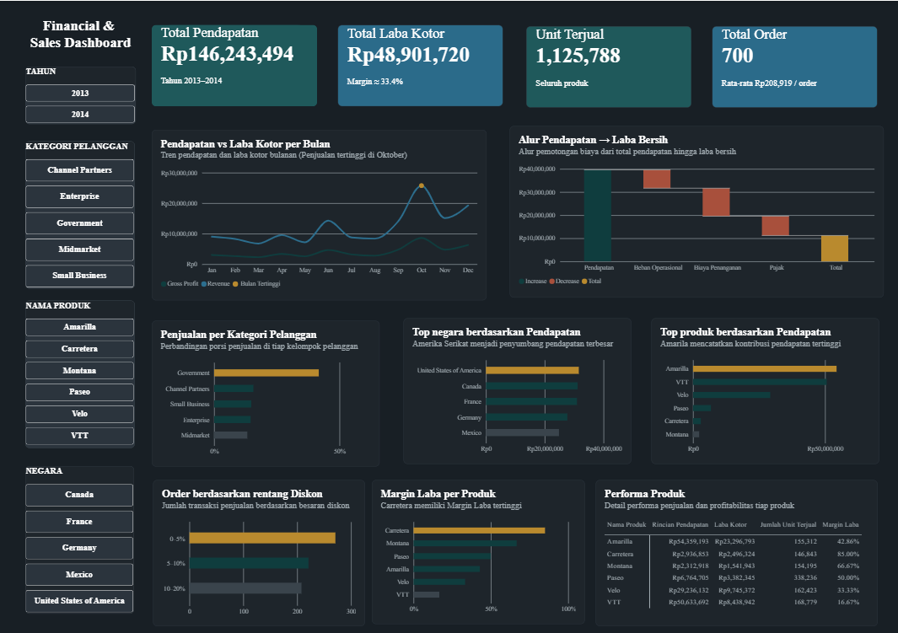

💰 Financial & Sales Performance Dashboard
Interactive Data Analytics & Business Intelligence Dashboard

Overview
Processed 700 transactions (2013–2014) into an interactive analytics dashboard to monitor revenue trends, product profitability, and customer segmentation in real time.
🎯 Problem Statement & Objective
- Challenge: Unstructured raw transaction data made it difficult for executives to identify products with high revenue but narrow profit margins.
- Solution: Designed a relational data model and centralized dashboard for multi-dimensional analysis across customer segments, geographic regions, products, and discount tiers.
📊 Key Performance Metrics
| Metrics | Results |
|---|---|
| Total Revenue | Rp146.24M |
| Gross Profit | Rp48.90M (Margin: 33.4%) |
| Total Orders / Units | 700 Orders (1,125,788 Units) |
| Avg. Order Value | Rp208,919 |
💡 Key Strategic Insights (Business Value)
- Profitability Anomaly: The Carretera product yielded the highest profit margin (85.00%) despite moderate revenue. Conversely, VTT generated high revenue (Rp50.63M) but recorded the lowest margin (16.67%).
- Revenue Engine: The Government segment represented the largest market driver (~40% of sales), with the United States as the primary geographic contributor.
- Seasonality Trend: Peak sales and gross profit occurred in October, establishing a key benchmark for inventory planning and marketing campaign scheduling.
⚙️ System Architecture & Workflow
1
Raw Transaction Data
700 Records (2013–2014)
➔
2
ETL & Data Cleaning
Excel & Data Preparation
➔
3
Relational Metrics
Pivot & DAX Logic
➔
4
Visual UI & Slicers
Executive Dashboard
🛠️ Tech Stack & Skills Highlighted
Analytics & Visualization
Capabilities